랜딩
지난 판 (2차)
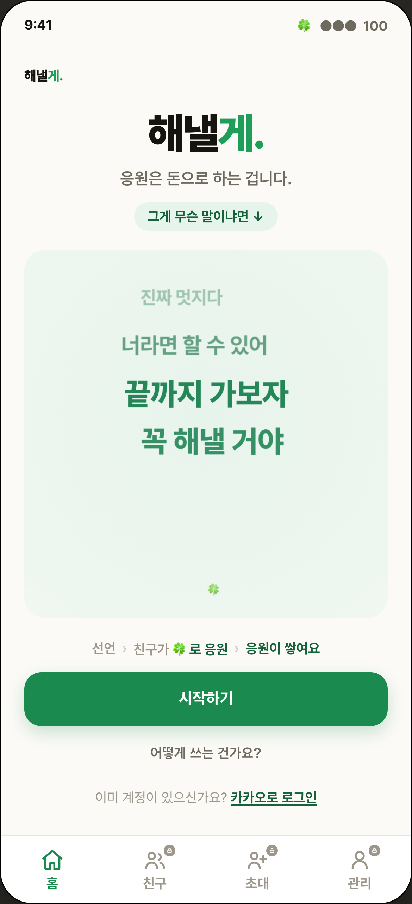
이번 개정 (3차)
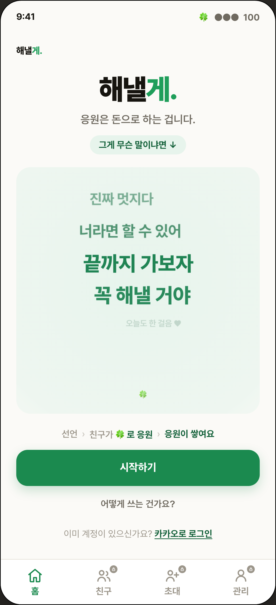
이번 판 변경점
- 변경 없음. 이번 지적 6건에 해당 사항이 없습니다. 대조를 위해 그대로 싣습니다.
왼쪽이 지난 판, 가운데가 이번 개정, 오른쪽이 실제 녹화한 모션입니다. 화면마다 아래에서 승인·수정·반려를 고르고 메모를 적으시면 입력하는 대로 저장되고, 위 메모·선택 전체 복사 버튼 하나로 전부 꺼내집니다.
1. 목표 관리 버튼이 CSS 없이 렌더된 건. 마크업 부모는 .goal-actions 인데 스타일은 .gfoot .gmanage 로만
선언돼 있었습니다. class 선언 여부만 보는 검사로는 안 잡히는 종류라, 렌더한 뒤 실제로 규칙이 걸렸는지 보는 검사기를
하네스에 넣고 23종을 전부 0 으로 만들었습니다.
2. 배너. 배너는 그 목표를 시각화하는 자리라는 정의를 결정 원장에 박고(D-028-A), 단색 그라데이션 6종을 폐기했습니다. 목표 성격별 실사 8종을 만들어 카카오 선물하기 메시지 카드처럼 가로로 넘겨 고르게 했고, 직접 업로드는 유지하며, 아무것도 안 고르면 목표 문장에서 성격을 읽어 자동으로 배정합니다.
3. 버전. 파일명을 올리지 않았습니다. v3 는 승인 세대 표기이고 작업 횟수가 아니라는 규칙을 하네스 표준으로
만들었습니다(prototype-versioning.md). 같은 세대 안의 개정이므로 같은 파일을 고치고 이력만 쌓았습니다.
4. 문구. 전송 경로·폴백 설명과 알림 채널 배지를 전부 걷어냈고, 없는 것을 설명하는 "금액도 순위도 없어요" 를 다섯 화면에서 지웠습니다. 금지 항목으로 UX writing 기준에 등재했습니다.
5. 모션. 따로 모아 두지 않고 화면 캡처와 같은 행, 같은 짝 안에 넣었습니다.


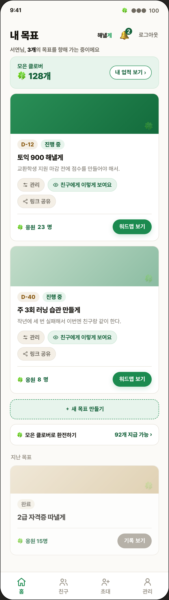
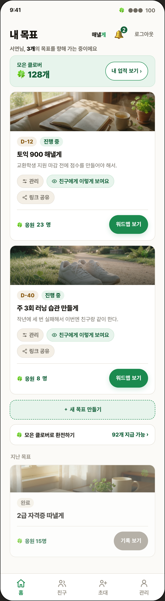
"해낼게 배너의 의미가 뭐야 목표 관련 이미지를 시각화하는거지? 정의안되어있으면 보여줄걸 단색이면 좀 그렇지 않냐?"
opacity 를 CSS 규칙으로. 마크업에 흩어진 스타일을 규칙으로 모으는 것이 이번 CSS 검사의 취지입니다.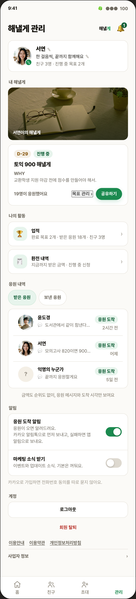
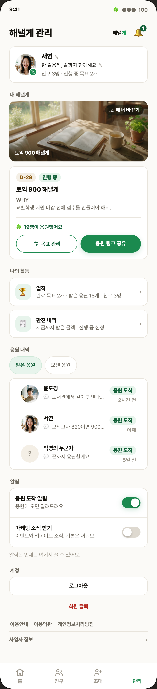
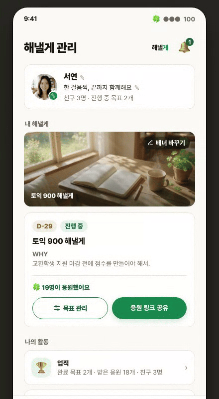
.goal-actions 인데 스타일은 .gfoot .gmanage 로만 선언돼 있어, 브라우저 기본 버튼이 그대로 보였습니다. 선택자를 실제 부모에 맞추고 위계를 정했습니다: 응원 인원은 윗줄, 아래에 보조(목표 관리, 테두리)와 주(응원 링크 공유, 채움)를 같은 폭 44px 로 나란히."해낼게 관리에서 목표관리 버튼은 왜 저따위로했고 ... 저런 쓰레기 css 없이 프로토타입이랍시고 올린 이유"
"응원 도착 알림에 잡 소리가 추가된 이유도 해명해라"
"배너사진은 너는 저게 이쁘다고생각하냐?"
"금액도 순위도 없어요 이런 좃같은 ux writing 한 이유도 해명해"
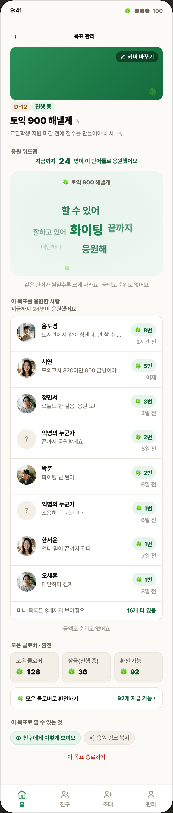
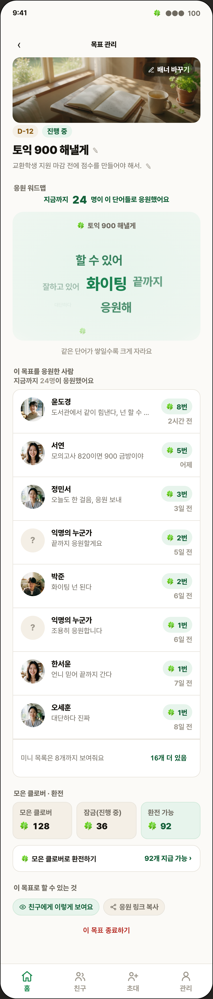
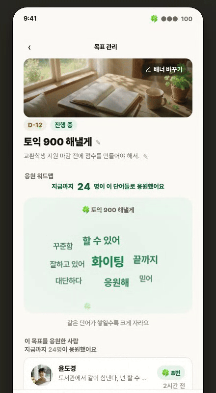
"카톡 선물하기 보면 메세지있잖아 그런거처럼 선택할수도 있게 해야지"
.gd-hero .gtop 에 규칙이 없어 칩 두 개가 흩어져 있었습니다.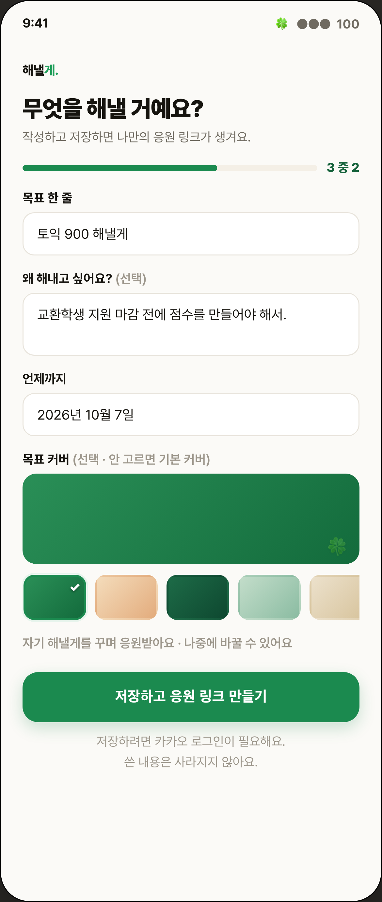
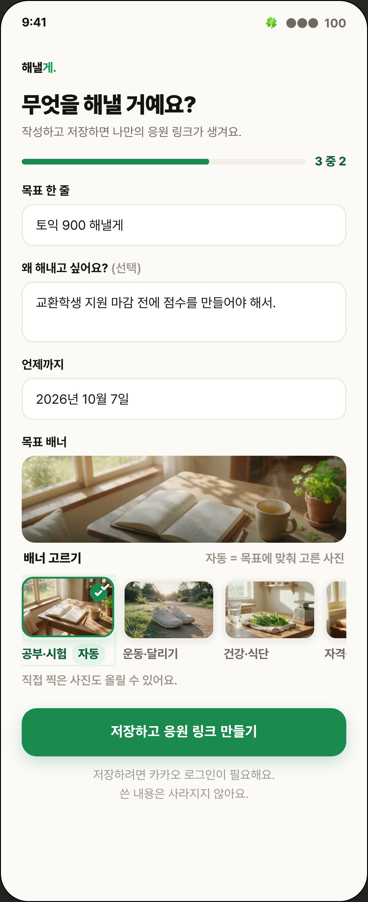
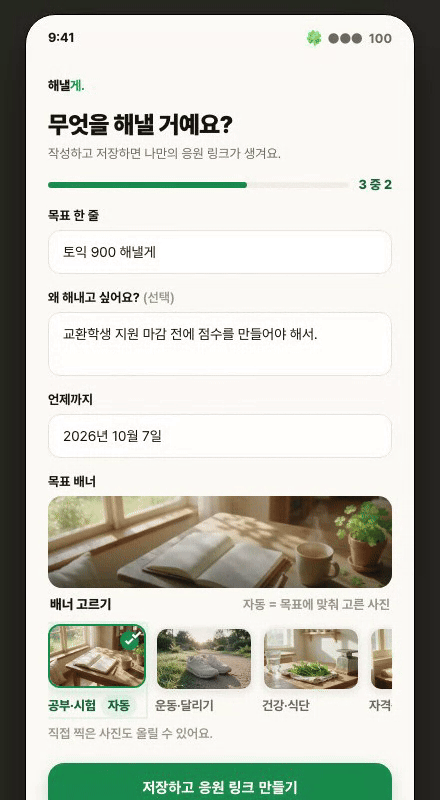
"정의안되어있으면 보여줄걸 단색이면 좀 그렇지 않냐?"
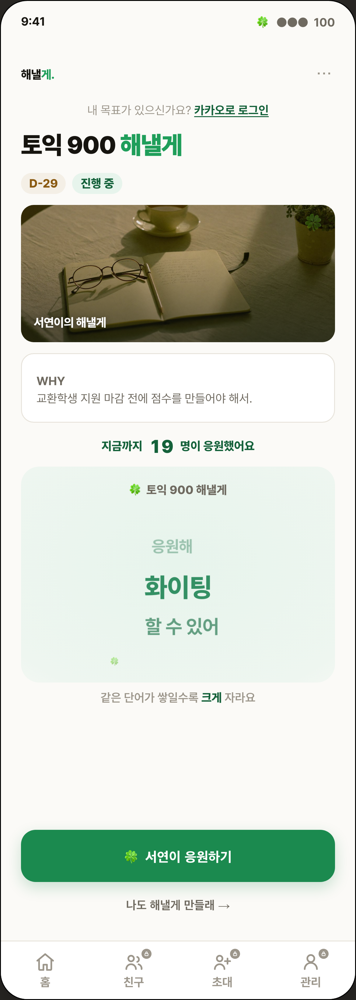
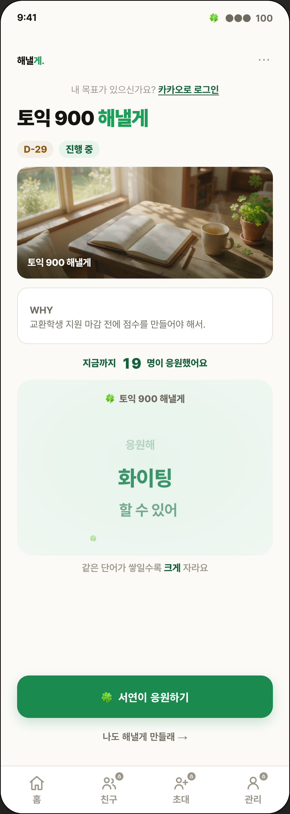
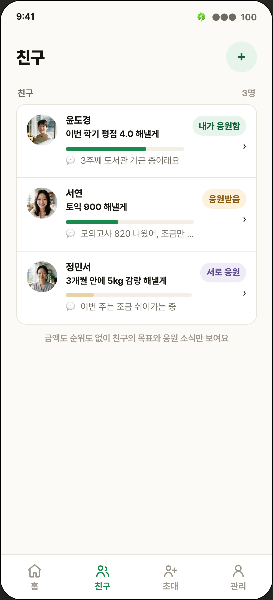
"금액도 순위도 없어요 이런 좃같은 ux writing"
.fr .rel .mp-go 에 규칙이 없어 맨 글자(›)로 렌더되고 있었습니다.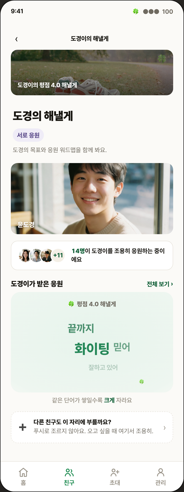
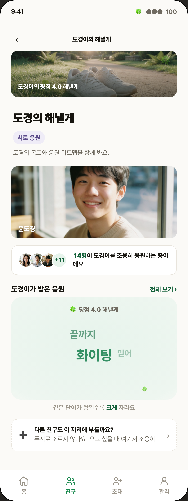
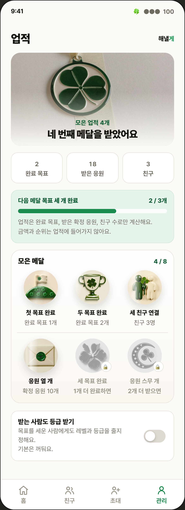

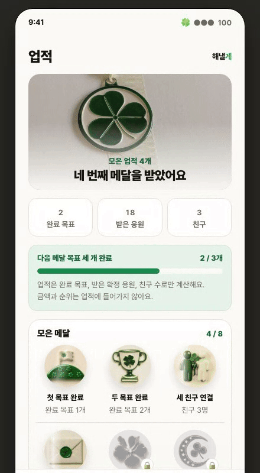
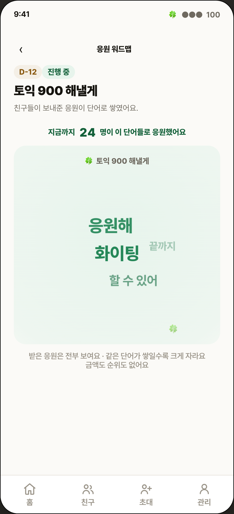
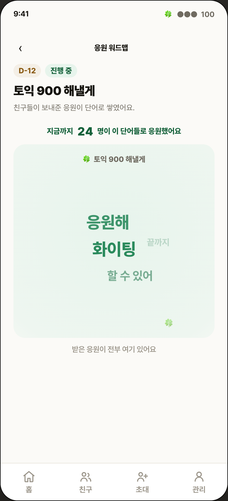
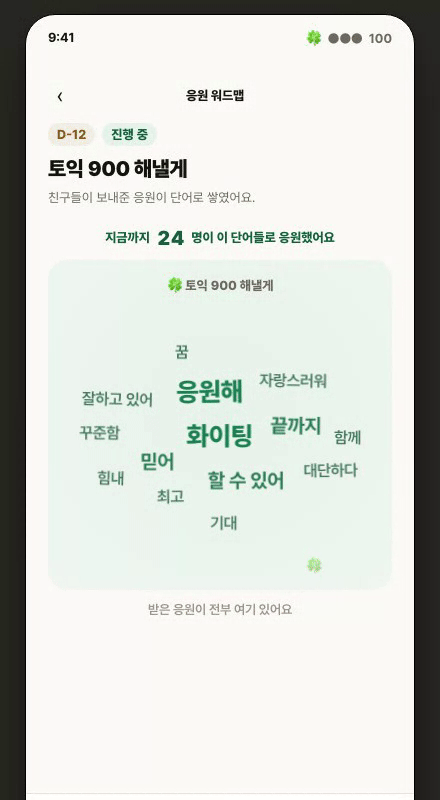
"금액도 순위도 없어요 이런 좃같은 ux writing"
"한줄로 하지말라고 말했는데 다 씹네"

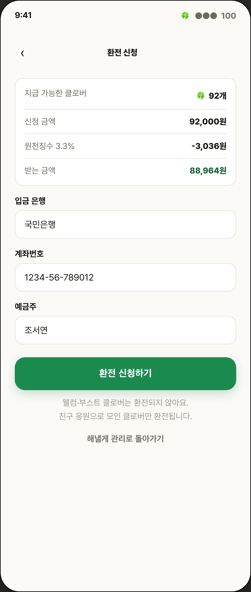